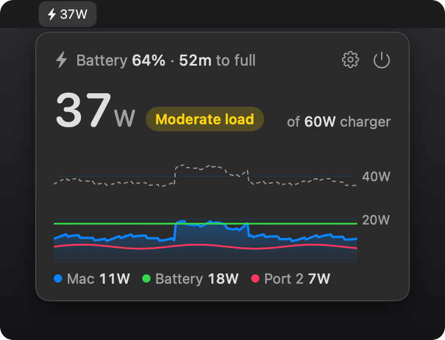
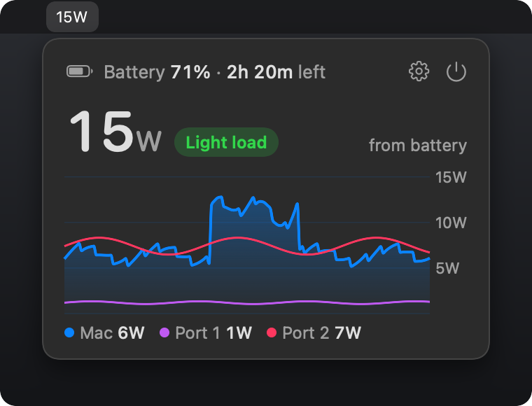

See exactly how many watts your Mac is pulling.
A tiny macOS menu bar app for USB-C charging power. Instantly tell whether a charger, or which port on a multi-port charger, is actually giving you good juice, and see where every watt goes.
brew install --cask benlumley/tap/wattusb
macOS 14+ · Universal (Apple Silicon + Intel). First launch: on macOS 15+, try to open the app, then click Open Anyway in System Settings → Privacy & Security; on macOS 14, right-click it → Open. Or xattr -dr com.apple.quarantine /Applications/wattusb.app
At a glance
The menu bar shows live watts. Click it for a live chart of where they're going: the Mac, the battery, and every device charging off your ports.


Features
Small enough to forget it's running. Detailed enough to settle any charger argument.
From the charger or the battery, right in the menu bar, updated every 2 seconds.
The last 5 minutes at a glance. Hover to scrub back and see the numbers at any moment.
See the watts going to your Mac, into the battery, and out to each phone or gadget on its ports.
Light, moderate, heavy or very heavy, so you know when something's working your Mac hard.
How much of its rated wattage you're using, and the voltage and current it actually negotiated.
A flaky cable caps the negotiated voltage, and the wattage drops with it. Compare ports, too.
Level and time to full or time left, with health, cycle count and temperature a hover away.
Open it from any app with your own shortcut. Esc closes it, ⌘Q quits. Opens at login.
Reads macOS's own battery data. No network, no telemetry, no dock icon. Open source.
Under the hood
All data comes straight from macOS's AppleSmartBattery IOKit service.
PowerTelemetryData.SystemPowerIn, the watts flowing in from the adapter.AdapterDetails gives the voltage/current the charger negotiated as its max.Voltage × Amperage reveals how much is actually reaching the cells.PowerTelemetryData.SystemLoad, whichever way the power's coming in.PowerOutDetails reports the watts going out of each USB-C port.